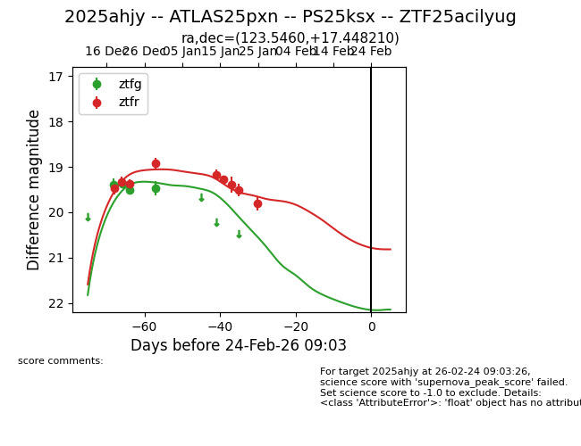
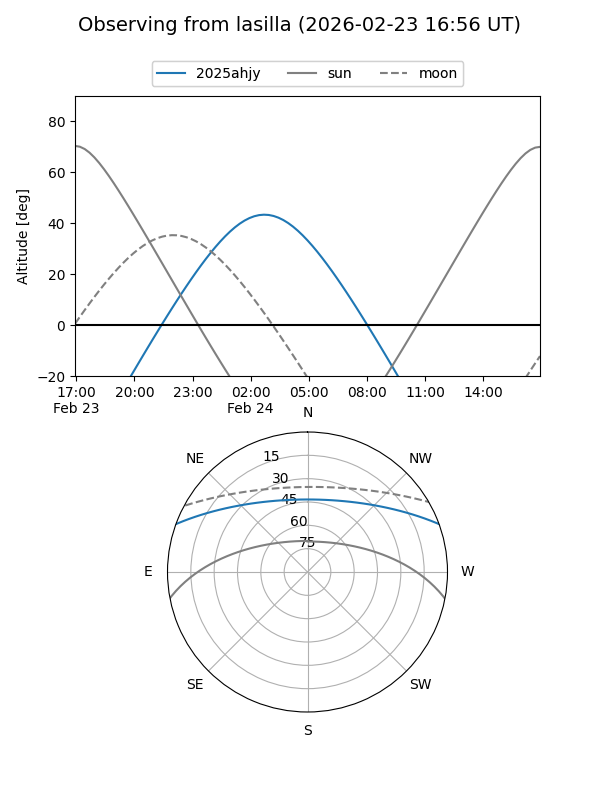
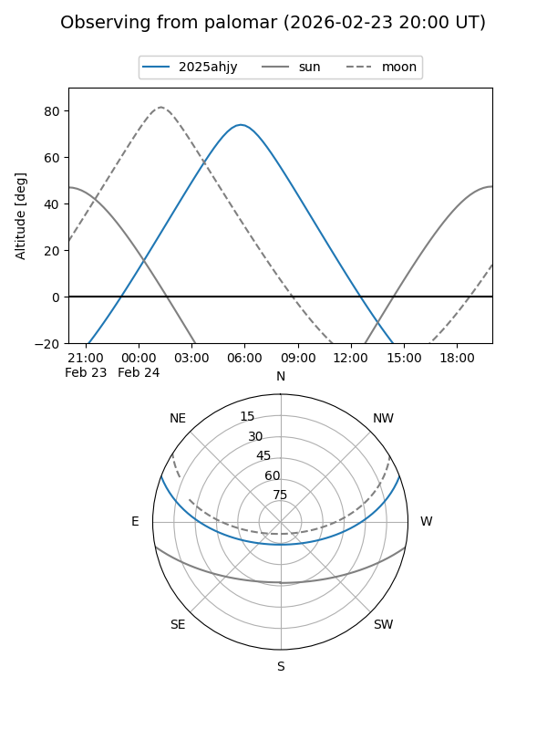
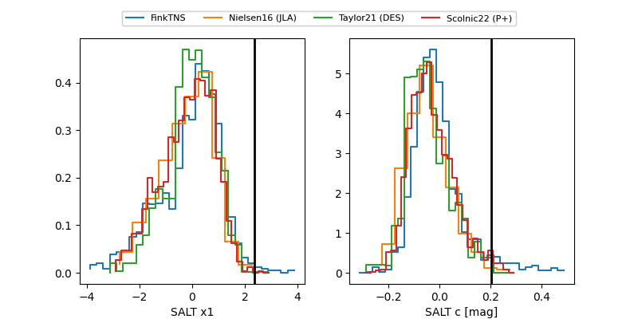

2025ahjy
Target 2025ahjy at 2025-12-20 12:54
Aliases and brokers:
FINK: fink-portal.org/ZTF25acilyug
Lasair: lasair-ztf.lsst.ac.uk/objects/ZTF25acilyug
ALeRCE: alerce.online/object/ZTF25acilyug
TNS: wis-tns.org/object/2025ahjy
YSE: ziggy.ucolick.org/yse/transient_detail/2025ahjy
alt names
ZTF25acilyug (ztf,fink_ztf)
2025ahjy (tns,yse)
Coordinates:
equatorial (ra, dec) = 123.5460,+17.44821
equatorial (HMS+DMS) = 08:14:11.05,+17:26:53.56
galactic (l, b) = (205.7039,+25.89041)
Flags:
Photometry:
last ztfg=19.37, ztfr=19.33
1 ztfg, 2 ztfr detections
Lightcurve

Visibility


Additional plots
